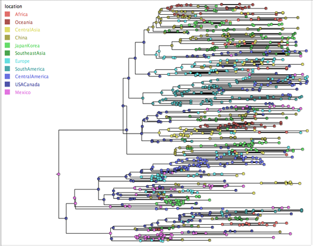
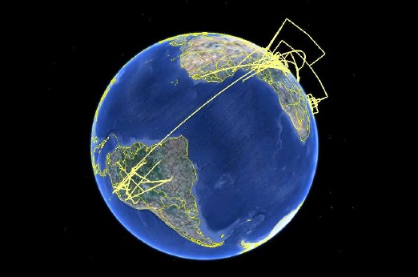
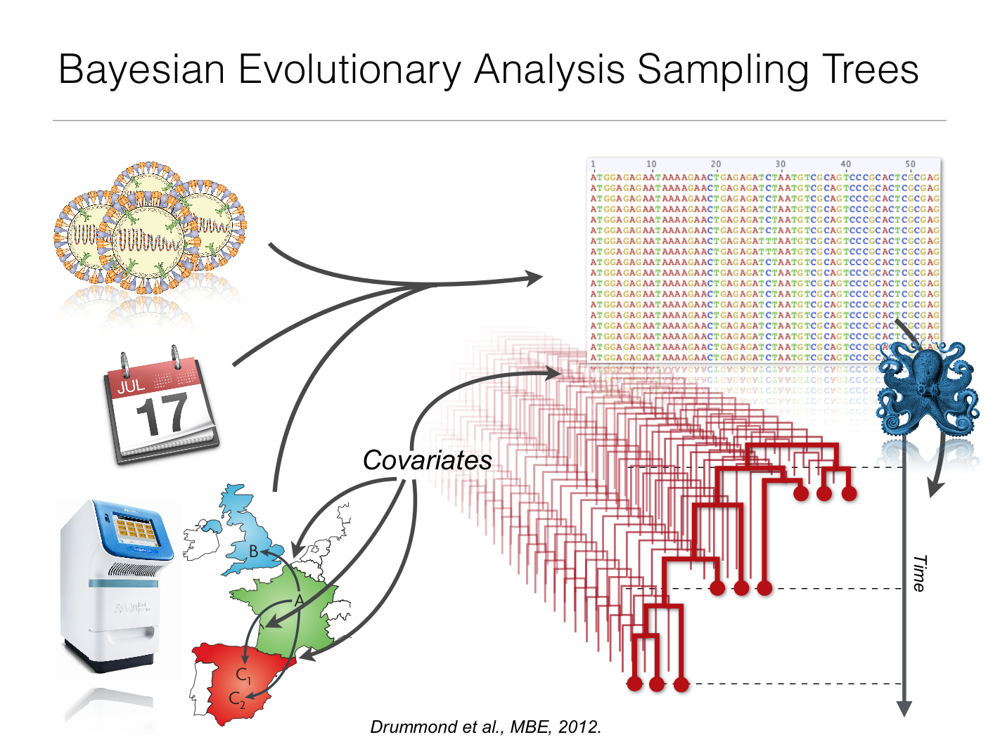
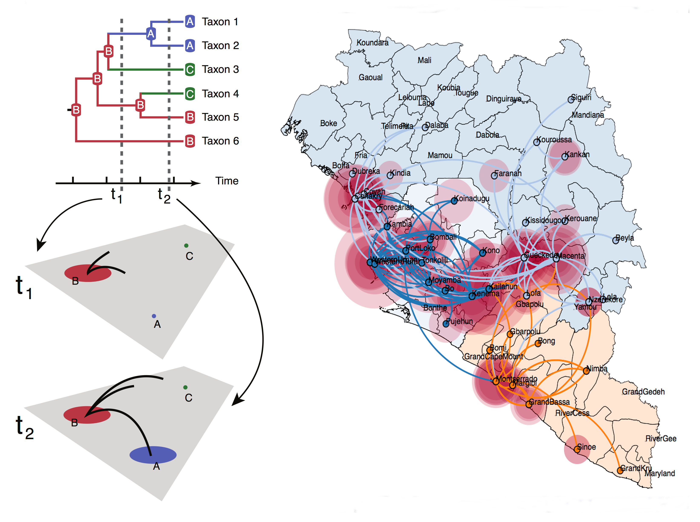
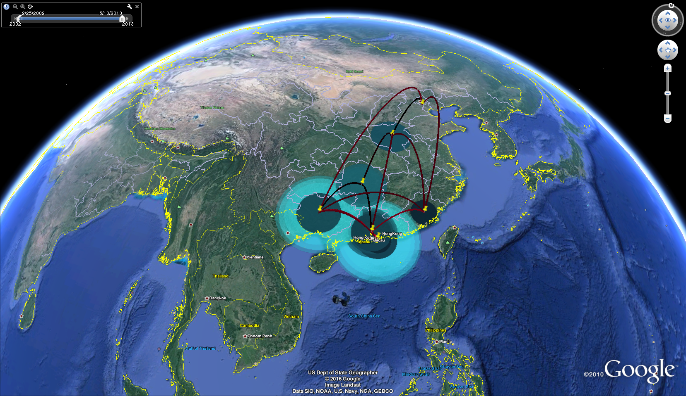
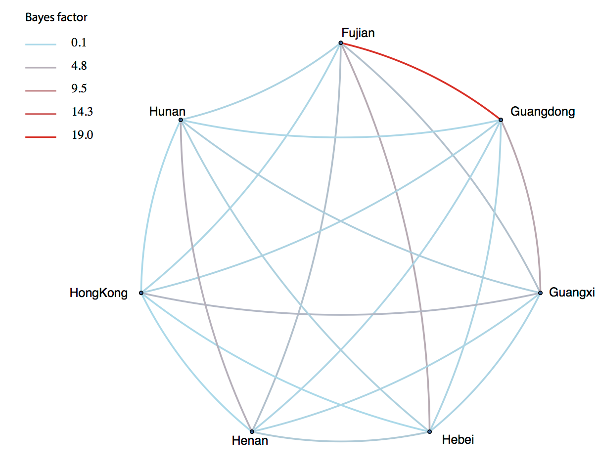
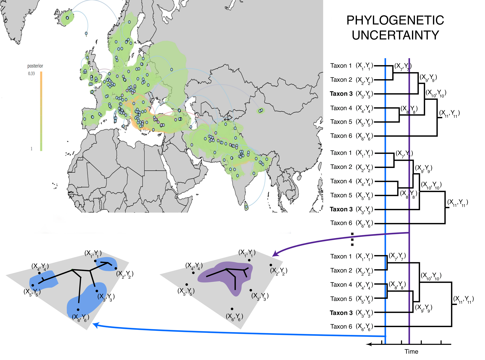
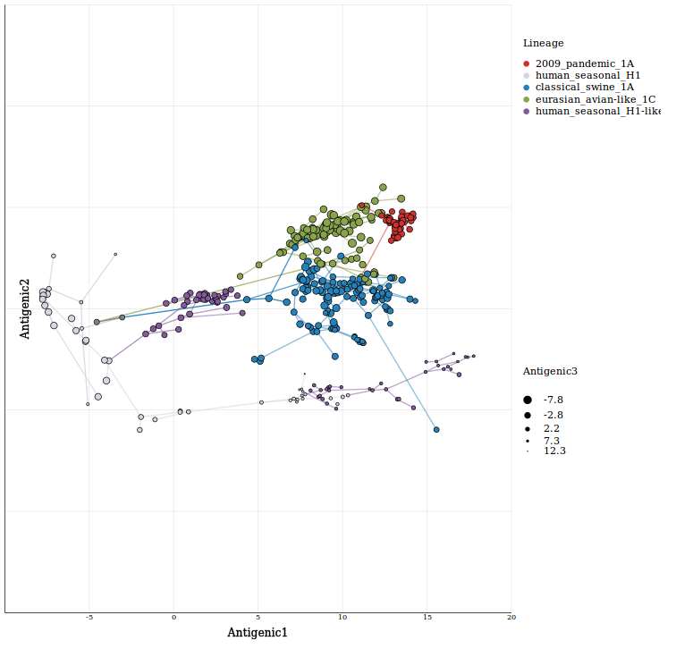

Visualizing viral diffusion
Past and current efforts
Cuban Bioinformatics Workshop on
Virus Evolution and Molecular Epidemiology
Slides can be downloaded from:
https://github.com/fbielejec/veme2016
Slides are also availiable online:
http://fbielejec.github.io/veme2016
About me
- Studied Applied Mathematics at Lodz University of Technology
- Postdoctoral researcher at the lab of Philippe Lemey
- Enthusiast of data visualization, parallel and distributed computing
- Author of πBUSS, Imp and SpreaD3
1850 cholera outbreak in Soho
John Snow and a map that changed the world
1850 cholera outbreak in Soho
- In XIX century cholera was believed to be spread by bad air.
- Sudden outbreak of cholera in London's Soho was a mystery.
- Snow did something revolutionary for his time: he mapped the cases.


1876 first phylogeny displayed on a map
Ernst Haeckel and the Hypothetical Sketch of the Monophyletic Origin and the Extension of the 12 Races of Man from Lemuria over the Earth
1876 first phylogeny displayed on a map
- Naturalists had a hard time explaining how some species got distributed over wide areas.
- A sunken land-mass Lemuria has been suggested as an origin of the human species.
- This would explain the absence of "missing link" fossil records.
- The idea, although wrong, has received considerable attention, partly owing to the compelling visualization .

Phylogeography [Avise, 2000]

Phylogeography connects evolutionary processes, which happen over time, with the processes of spatial dispersal into a joint spatio-temporal dynamic.
Phylogeography
Phylogenetic tree is now a record of both the evolutionary ancestry and the geographic dispersal process.
Visually connecting spatial information to trees
Annotations (Figtree)
- Tip branches labelled according to the names of the locations.
- Most appropriate when the geographic complexity is low.
- Prioritizes the visualisation of the tree over the spatial process.
Tangle-maps

- Term made by analogy to tangle-graphs.
- Combines cartographic maps with images of trees.
- Software: GenGIS
Geophylogenies
- The tree becomes part of the map by making it's projection.
- Can be achieved in 2D or 3D.
- Popularity driven by GoogleEarth.
Bayesian Evolutionary Analysis Sampling Trees (BEAST)
[Drummond et al., 2012]BEAST - model based approach
- Branch lengths can be rescaled into real time units using a molecular clock.
- Bayesian phylogeography results in whole posterior distributions of plausible histories.
- Additional sources of information.
BEAST - model based approach

- The tree is a record of both ancestral relation & geographic movement.
- BEAST's discrete phylogeographic models: locations are discrete states of a CTMC [Lemey et al 2009].
- Continuous phylogeographic models: longitude and latitude are driven by a brownian diffusion process [Lemey et al 2010].
SpreaD3 - visualizing discrete diffusion
- Each state is a point location.
- Branches with a state transition are projected as arcs.
- Branches which maintain a state are displayed as circles.
#1 rule of presentation: never do a live demo.
LIVE DEMO!
Results at: phylogeography.github.io/SpreaD3/
But there's more!
Support for animated 3D projections in GoogleEarth

Influenza A H5N1 data also used by [Lemey et al 2009]
Identifying well-supported rates of transmission

Bayes factors: how much the posterior deviates from the prior beliefs.
Visualizing a full posterior distribution of trees
Indo-european languages dataset from Bouckaert et al. (2012).
Antigenic cartography

Antigenic coordinates measures how antigenically dissimilar virus strains are.
Swine influenza A viruses dataset, [Lewis et al. (2016)].
SpreaD3
- Get it: rega.kuleuven.be/cev/ecv/software/SpreaD3
- Fork it:
- User interfaces and parsers @github: github.com/phylogeography/SpreaD3
- Visualisation engine @github: github.com/phylogeography/d3-renderer
- All contributions welcomed!
Special thanks to:
- Andrew Rambaut, University of Edinburgh
- Philippe Lemey, KU Leuven